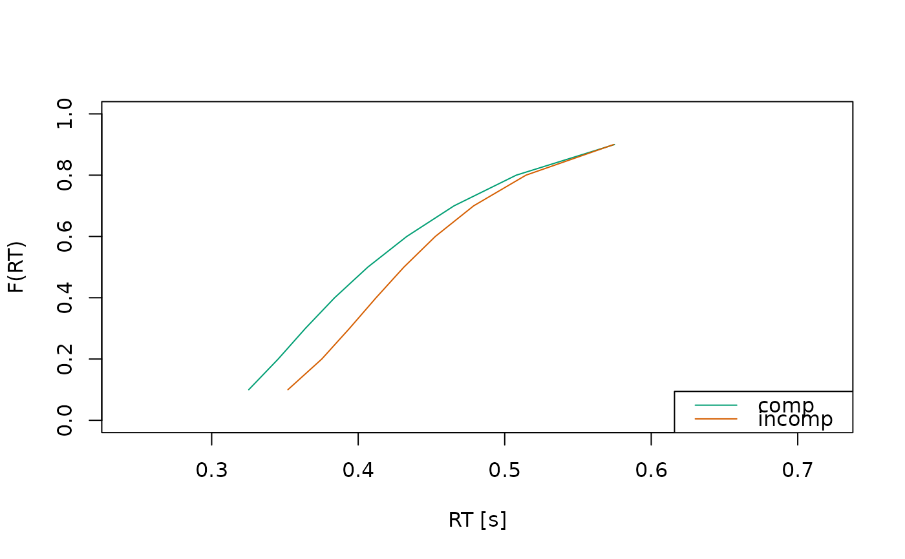
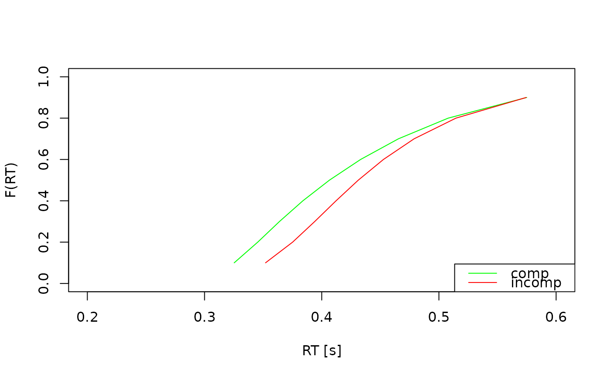
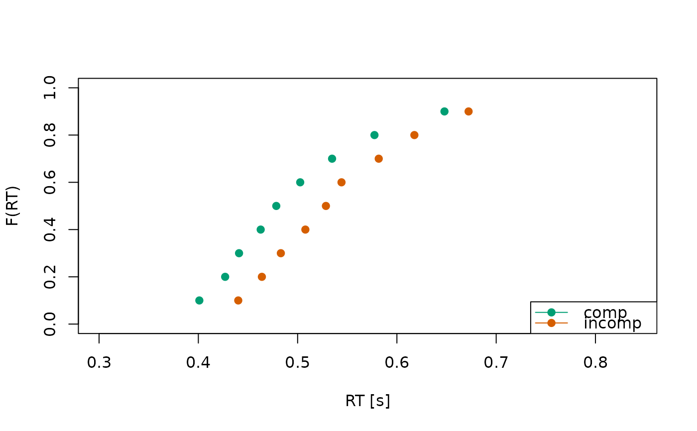

This function generates a plot of quantiles. It can display observed and predicted values, making it useful for assessing model fit or exploring observed data distributions.
If the data contains multiple IDs, quantiles are aggregated across IDs before plotting.
Arguments
- x
a data.frame, containing quantiles, typically resulting from a call to calc_stats.
- ...
additional arguments passed to the plot, graphics::points, and graphics::legend functions. Oftentimes, this will (unfortunately) lead to an error due to a clash of arguments.
- conds
character vector, specifying the conditions to plot. Defaults to all unique conditions.
- dv
character, specifying the quantiles to plot. Defaults to quantiles derived from the upper boundary.
- col
character vector, specifying colors for each condition. If a single color is provided, it will be repeated for each condition.
- xlim, ylim
numeric vectors of length 2, specifying the x and y axis limits.
- xlab, ylab
character, labels for the x and y axes.
- pch
integer, specifying the plotting symbol for observed data points.
- lty
integer, line type for the predicted quantiles.
- type
character, type of plot for the predicted quantiles.
- legend
character vector, specifying legend labels corresponding to the conditions in the quantiles. Defaults to the condition names.
- legend_pos
character, specifying the position of the legend on the plot.
Details
The plot.quantiles function allows for a quick investigation of quantiles,
including options for color, symbols, and line types for different data
sources (observed vs. predicted). When the supplied data.frame includes
multiple IDs, quantiles are aggregated across IDs before plotting.
Examples
# Example 1: Only model predictions ---------------------------------------
# get a quantiles data.frame for demonstration purpose
a_model <- dmc_dm(t_max = 1.5, dt = .0025, dx = .0025)
quantiles <- calc_stats(a_model, type = "quantiles")
# call the plot function with default values
plot(quantiles)

# make the plot a little bit more pretty
plot(quantiles,
col = c("green", "red"),
xlim = c(0.2, 0.6),
ylab = "Quantile Level",
xlab = "Response Times [s]"
)

# Example 2: Model predictions and observed data --------------------------
obs_data(a_model) <- dmc_synth_data
quantiles <- calc_stats(a_model, type = "quantiles")
plot(quantiles)
# Note: The model was not fitted to the data set, thus observed data and
# model predictions don't match
# Example 3: Only observed data -------------------------------------------
quantiles <- calc_stats(dmc_synth_data, type = "quantiles")
plot(quantiles)
